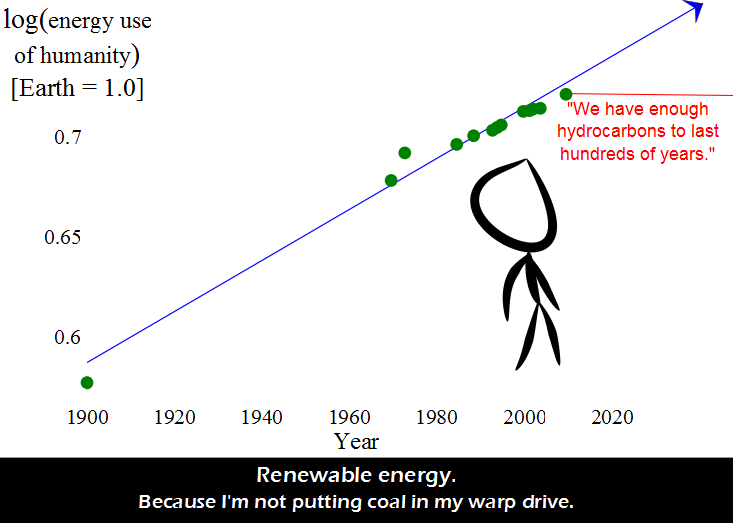

Comic JK 762
When I Feel Like It
⇤
<
?
>
⇥

⇤
<
?
>
⇥
Forum
.
RSS
.
Digg
.
Facebook
.
Reddit
.
Twitter
.
Stumbleupon
Enter your thoughts on number 762 here. Please, no spamming, trolling, or putting coal in a warp drive. It ruins the nacelles. If you inoculate a jar of liquid with bacteria and there is exactly enough food to last 30 minutes, and the bacteria population doubles every minute, at which time is half of the food consumed? >After 29 minutes, bringing an interesting perspective to the case... >>But how many *pure* exponential growths are there in real life? Even in this simple bacteria in a jar thought experiment, you're not taking into account waste production inside the jar and its impact on growth... >>>translation: since the real world is vastly more complicated than anything we can model, all models are useless. We might as well go back to believing in God and Santa. >>>>Ho Ho Ho. >>>>>Santa, bring me a warp drive! >>>>>>I want a transporter and a holodeck. WOOOOOO! >>>>>>>You realise how expensive those things are? You're more likely to get a toy car or some chocolate. >>>>>>>>Chocolate? I'd settle for chocolate! >>>>>>>>>I'd settle for 7 of 9... ( chocolate optional ) >>>>>>>>>>chocolate is NEVER optional! (agree on settling for sevenofnine) >>>>>>>>>>>so, resisting chocolate is futile... ? >>>>>>>>>>>>Only if < 1 ohm. >>>>>>>>>>>>>You all realize the answer is given in the problem, right? >>>>>>>>>>>>>>which problem ? there are so many, after all... >>>>>>>>>>>>>>>What, no "getting coal" joke? You dissapoint me...